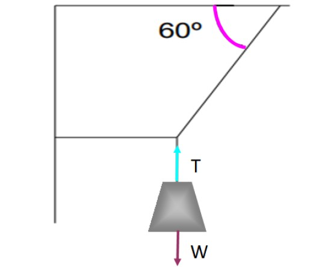

Equilibrio Translacional
¿Qué es?
|
El equilibrio translacional es un concepto fundamento en física que se refiere al moviemiento de un objeto
en una dimensión, sin rotación ni oscilación.
Ocurre cuando la suma de las fuerzas que actúan sobre un objeto es igual a cero, lo que significa que el objeto
no experimenta aceleración ni deceleración en su movimiento.
Un ejercicio de ejemplo es el siguiente: Un semáforo que tiene una masa de 50 kg cuelga de dos cable. Calcula la
fuerza que necesitan tener los dos cables para estar en equilibrio. El ejercicio nos da un diagrama con el semaforo
y los cables que están anclados a una pared y a un techo formando unos angulos. |
|  |
|
El procedimiento a realizar es el siguiente: |
Método por Triángulo de Fuerzas
|
Éste método como su nombre lo dice, utilizaremos un triángulo donde la medida de sus ángulos sean las magnitudes que
tengamos. Y como último paso, se va a despejar la fórmula conforme la incógnita. |